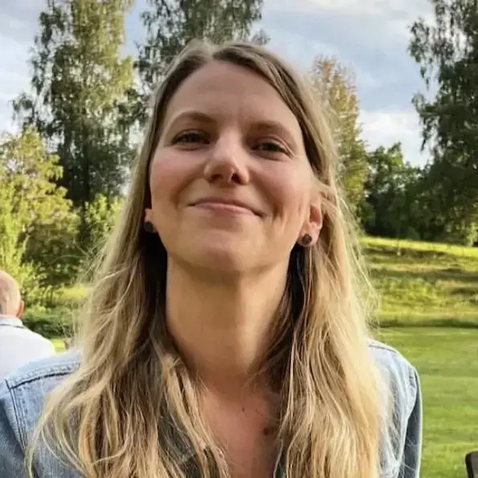

Om mig

Jag är en vetgirig och analyserande person som gillar att förstå hur saker hänger samman och att hitta smarta lösningar på komplexa problem. Efter flera års arbete som logoped inom hälsovård och forskning har jag förfinat mina färdigheter i att lyssna, samarbeta och se helheten; kvaliteter som jag tar med mig in i min nya bana som utvecklare.
För närvarande studerar jag till fullstackutvecklare .NET på Chas Academy i Stockholm. Genom utbildningen får jag kombinera mitt intresse för logiskt tänkande och problemlösning med kreativitet och möjligheten att bredda min kompetens.
Mitt närmaste mål är att hitta en praktikplats (LIA) mellan den 30 november 2026 och den 18 april 2027. Jag ser fram emot att bidra i ett utvecklingsteam där jag kan växa som utvecklare, använda mina nya kunskaper och fördjupa mitt lärande genom praktisk tillämpning.
Utanför studierna hittar jag energi och balans genom att träna, sjunga i kör och läsa böcker. Dessa aktiviteter hjälper mig att behålla fokus samt hitta inspiration och kreativitet.